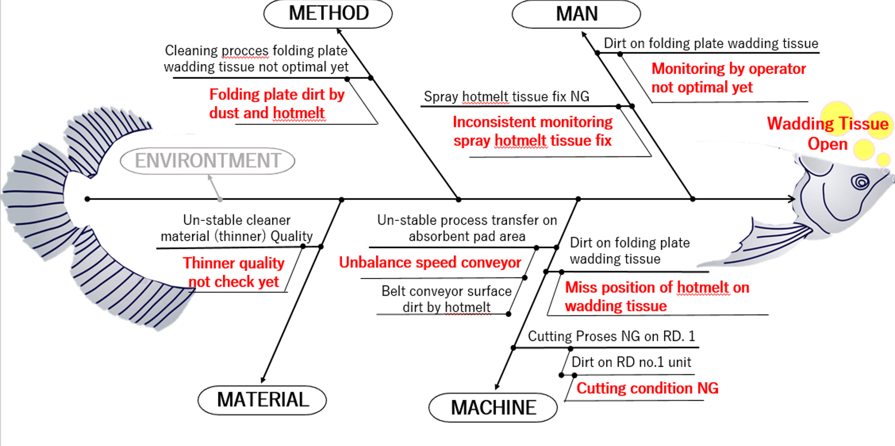
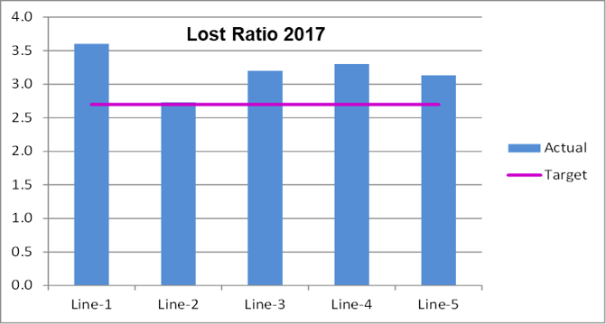
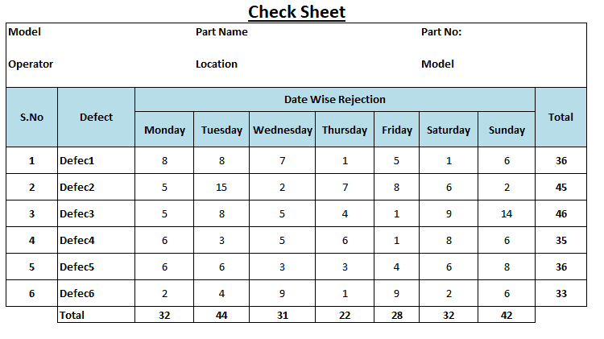
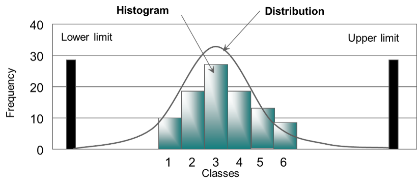
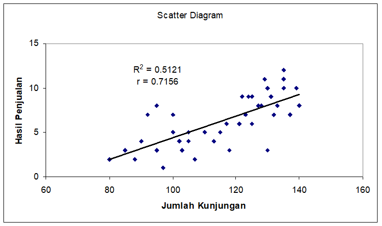
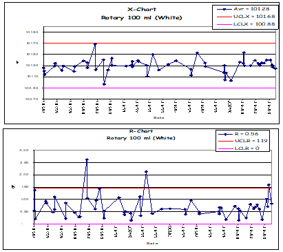

Apa itu 7QC Tools?
7QC Tools adalah sekumpulan alat statistik sederhana yang digunakan untuk menganalisis data, mengidentifikasi akar masalah, dan mengontrol kualitas proses produksi.
| No | Alat (Tools) | Fungsi Utama | Contoh Visual |
|---|---|---|---|
| 1 | DIAGRAM PARETO | Menentukan prioritas masalah (Prinsip 80/20). |  |
| 2 | CAUSE EFFECT DIAGRAM | Mencari akar penyebab masalah (Fishbone). |  |
| 3 | GRAPH | Memvisualisasikan tren data. |  |
| 4 | CHECK SHEET | Mengumpulkan data secara sistematis. |  |
| 5 | HISTOGRAM | Melihat distribusi/penyebaran data. |  |
| 6 | SCATTER DIAGRAM | Melihat hubungan antara dua variabel. |  |
| 7 | CONTROL CHART | Memantau stabilitas proses. |  |
1. Diagram Pareto

Diagram Pareto adalah alat visual (grafik batang dan garis) yang digunakan untuk mengidentifikasi dan memprioritaskan masalah atau penyebab paling signifikan dengan mengurutkan data dari frekuensi tertinggi ke terendah, berdasarkan Prinsip Pareto (aturan 80/20) bahwa sebagian kecil penyebab (20%) menghasilkan sebagian besar masalah (80%), sehingga membantu tim fokus pada solusi paling efektif untuk peningkatan kualitas.
Fungsi Utama Diagram Pareto:
- Identifikasi Prioritas: Menunjukkan masalah mana yang paling sering terjadi atau berdampak besar untuk diselesaikan terlebih dahulu.
- Fokus Efisien: Membantu tim mengalokasikan sumber daya untuk mengatasi penyebab utama, bukan semua masalah kecil.
- Visualisasi Data: Menggabungkan grafik batang (frekuensi) dan garis (kumulatif) untuk menunjukkan dampak gabungan dari masalah.
Cara Kerjanya:
- Kumpulkan Data: Catat data tentang berbagai masalah atau cacat (misalnya, jenis kesalahan, keluhan pelanggan).
- Susun Urutan: Urutkan data dari yang paling sering terjadi (tertinggi) ke yang paling jarang (terendah).
- Buat Grafik:
- Batang: Sumbu X menunjukkan kategori masalah, sumbu Y kiri menunjukkan frekuensi/biaya, batang diurutkan menurun.
- Garis: Sumbu Y kanan menunjukkan persentase kumulatif, garis menunjukkan total kumulatif dari batang.
- Analisis: Temukan titik di mana 80% masalah tercakup (di bawah garis 80%) untuk menentukan "vital few" (penyebab vital) yang perlu ditangani.
2. CAUSE AND EFFECT DIAGRAM (FISHBONE)
Diagram sebab akibat (Cause-and-Effect Diagram atau Diagram Tulang Ikan/Ishikawa) digunakan untuk mengidentifikasi, menganalisis, dan mengorganisasi penyebab potensial dari suatu masalah atau efek tertentu secara visual dan sistematis, membantu tim dalam brainstorming akar penyebab, mencari solusi, dan mendorong perbaikan berkelanjutan.
Fungsi Utama:
- Identifikasi Akar Penyebab (Root Cause Analysis): Membantu menemukan akar masalah, bukan hanya gejala, dengan mengkategorikan penyebab potensial seperti manusia, mesin, metode, material, pengukuran, dan lingkungan (6M).
- Visualisasi Masalah: Menampilkan hubungan sebab-akibat secara grafis menyerupai tulang ikan, memudahkan pemahaman masalah secara menyeluruh.
- Pemecahan Masalah (Problem Solving): Menjadi alat dasar dalam tim untuk memecahkan masalah, mengumpulkan ide, dan memprioritaskan penyebab untuk investigasi lebih lanjut.
- Peningkatan Kualitas: Banyak digunakan dalam metodologi seperti Six Sigma untuk mencegah masalah terulang dengan mengatasi akar penyebabnya.
Digunakan Untuk:
- Menganalisis masalah kualitas produk/layanan.
- Memahami keterlambatan atau kegagalan dalam proses.
- Meningkatkan efisiensi operasional di berbagai industri (manufaktur, kesehatan, dll.).
3. GRAPH (Grafik)

Grafik dalam Quality Control Circle (QCC) digunakan sebagai alat visual untuk menganalisis, memantau, dan mengomunikasikan data yang berhubungan dengan kualitas. Tujuannya adalah untuk membantu tim QCC dalam mengidentifikasi masalah, memahami penyebabnya, dan mengukur efektivitas solusi yang diterapkan.
Beberapa Kegunaan Spesifik Grafik dalam QCC meliputi:
- Identifikasi Masalah: Grafik seperti diagram pareto membantu mengidentifikasi masalah yang paling signifikan dengan memprioritaskan frekuensi kejadiannya.
- Analisis Proses: Grafik kendali (control charts) digunakan untuk memantau stabilitas proses dari waktu ke waktu dan mendeteksi adanya variasi yang tidak wajar.
- Menemukan Akar Masalah: Diagram sebab-akibat (fishbone diagram) sering digunakan bersama alat visual lainnya untuk mengorganisir potensi penyebab masalah secara sistematis.
- Pengambilan Keputusan: Data yang divisualisasikan membantu tim dalam mengambil keputusan yang berbasis fakta (data-driven decisions) daripada sekadar asumsi.
- Presentasi Hasil: Grafik memudahkan komunikasi hasil analisis, perkembangan proyek, dan pencapaian yang diperoleh tim QCC kepada manajemen atau pihak terkait lainnya.
4. CHECK SHEET (Lembar Periksa)

Check Sheet (Lembar Periksa) adalah lembar/formulir yang dirancang untuk mengumpulkan data yang berfungsi sebagai metode sederhana dan sistematis untuk mengumpulkan data, mencatat frekuensi masalah atau cacat, dan mengidentifikasi pola awal secara terstruktur, sering kali menggunakan tanda centang (✓) pada format tabel untuk mempermudah analisis data awal sebelum diolah lebih lanjut menjadi histogram atau diagram lain.
Fungsi Utama Check Sheet dalam 7 QC Tools:
- Pengumpulan Data Sistematis: Mencatat kejadian atau data yang relevan secara berulang di lokasi kejadian (misalnya, frekuensi produk cacat, lokasi cacat).
- Identifikasi Pola & Frekuensi: Membantu melihat pola kemunculan masalah atau jenis cacat dengan mudah, seperti berapa kali suatu masalah terjadi.
- Dasar Analisis Selanjutnya: Data yang terkumpul menjadi input penting untuk alat QC lain seperti Histogram, Pareto Chart, dan Fishbone Diagram.
- Monitoring Proses: Digunakan untuk memantau parameter proses atau kepatuhan terhadap standar secara berkala.
Contoh Penggunaan & Fungsi:
- Process Distribution Check Sheet: Mencatat distribusi data proses (misalnya, panjang produk).
- Defective Item Check Sheet: Mencatat jenis cacat yang sering muncul (misalnya, sobek, kotor, penyok).
- Defect Location Check Sheet: Mencatat lokasi di mana cacat terjadi pada produk (misalnya, bagian atas, samping, bawah).
- Defective Cause Check Sheet: Mencatat penyebab cacat (misalnya, mesin, material, operator).
Cara Membuat Check Sheet:
- Tentukan apa yang akan diamati/dicatat (jenis masalah, lokasi, penyebab).
- Tentukan kapan dan berapa lama data akan dikumpulkan.
- Rancang format lembar dengan kolom kategori dan baris kejadian, gunakan tanda centang (✓) saat data muncul.
- Tambahkan etiket pada setiap bagian formulir.
- Rekam data setiap kali kejadian terjadi.
5. HISTOGRAM

Histogram dalam 7 QC Tools digunakan untuk memvisualisasikan distribusi frekuensi data secara grafis guna memahami pola sebaran data, mengidentifikasi variasi (apakah merata atau tidak), menemukan anomali/pencilan (outlier), dan membantu menentukan apakah suatu proses stabil atau tidak, sehingga menjadi dasar untuk analisis lebih lanjut atau perbaikan kualitas.
Tujuan dan Fungsi Histogram:
- Memvisualisasikan Distribusi Data: Menampilkan bentuk sebaran data (seperti distribusi normal atau miring) dalam bentuk batang vertikal.
- Memahami Kinerja Proses: Mendeteksi apakah proses bisnis konsisten atau fluktuatif.
- Mengidentifikasi Outlier (Pencilan): Menemukan nilai ekstrem yang berada di luar pola utama.
- Menganalisis Variasi: Menunjukkan tingkat variabilitas atau lebar sebaran data dalam proses.
- Dasar Analisis Lanjutan: Menjadi input untuk alat QC lain seperti Diagram Pareto atau Fishbone.
Contoh Penggunaan:
Jika ada keluhan makanan terlambat, tim mengumpulkan data waktu tunggu (Check Sheet). Histogram dibuat untuk melihat seberapa sering keterlambatan terjadi dalam rentang waktu tertentu.
Cara Membuat Histogram (Langkah Manual):
- Kumpulkan Data Numerik: Misal data tinggi badan atau nilai ujian.
- Tentukan Interval (Kelas): Bagi rentang data menjadi interval yang sama lebarnya (misal: 10-19, 20-29).
- Buat Tabel Frekuensi: Hitung berapa banyak data yang masuk di setiap interval.
- Gambar Sumbu: Sumbu X untuk interval data, sumbu Y untuk frekuensi.
- Gambarkan Batang: Buat batang yang saling menempel satu sama lain sesuai frekuensi tiap interval.
Cara Digital (Excel/Google Sheets):
- Masukkan Data: Tulis data numerik di kolom.
- Pilih Data: Sorot/blok seluruh data.
- Sisipkan Bagan: Pilih Insert > Chart > Histogram.
6. SCATTER DIAGRAM (Diagram Pencar)

Scatter diagram (diagram pencar) digunakan untuk mengamati dan memvisualisasikan hubungan atau korelasi antara dua variabel numerik, menunjukkan apakah hubungannya positif, negatif, atau tidak ada hubungan sama sekali, serta mengidentifikasi pola, tren, kelompok (clustering), dan pencilan (outliers) dalam data untuk tujuan analisis dan prediksi.
Fungsi Utama Scatter Diagram:
- Melihat Hubungan Antar Variabel: Menampilkan seberapa erat hubungan antara variabel independen (sumbu X) dan variabel dependen (sumbu Y).
- Mengidentifikasi Jenis Korelasi: Menentukan apakah hubungannya positif (berbanding lurus), negatif (berbanding terbalik), atau tidak berkorelasi.
- Menemukan Pola dan Tren: Membantu melihat pola penyebaran data, seperti tren linier atau nonlinier, yang sulit dilihat dari data mentah.
- Mendeteksi Outliers: Menunjukkan titik data yang menyimpang dari pola umum (pencilan).
- Dasar Prediksi: Memungkinkan prediksi nilai satu variabel berdasarkan nilai variabel lain jika pola yang jelas terbentuk.
- Mengidentifikasi Akar Penyebab: Sering digunakan setelah membuat diagram sebab-akibat (fishbone) untuk menguji secara objektif apakah penyebab dan akibat tertentu benar-benar saling terkait.
Contoh Penggunaan:
- Hubungan antara jam belajar (X) dan nilai ujian (Y).
- Hubungan antara konsumsi gula (X) dan kenaikan berat badan (Y).
- Hubungan antara kecepatan kendaraan (X) dan jarak pengereman (Y).
7. CONTROL CHART (Peta Kendali)

Control chart (peta kendali) digunakan untuk memantau stabilitas suatu proses dari waktu ke waktu guna memastikan kualitas tetap konsisten, mengidentifikasi variasi yang tidak biasa (penyebab khusus) yang memerlukan tindakan perbaikan, serta membedakan variasi alami (penyebab umum) yang tidak perlu diutak-atik, sehingga membantu pengambilan keputusan untuk perbaikan proses bisnis atau manufaktur secara berkelanjutan.
Fungsi Utama Control Chart:
- Membedakan Penyebab Variasi: Membantu membedakan antara variasi acak alami (common cause variation) dan variasi yang disebabkan oleh masalah spesifik (special cause variation).
- Mendeteksi Penyimpangan: Menunjukkan kapan suatu proses keluar dari batas kendali (UCL/LCL), menandakan adanya masalah kualitas atau anomali.
- Memantau Konsistensi: Mengukur apakah suatu proses berjalan secara konsisten atau mengalami tren (naik/turun) dari waktu ke waktu.
Bagaimana Cara Kerjanya:
- Pengumpulan Data: Data pengukuran dikumpulkan secara berkala.
- Penentuan Batas: Dibuat garis tengah (rata-rata), Batas Kendali Atas (UCL), dan Batas Kendali Bawah (LCL).
- Plotting Data: Data baru diplot pada grafik; jika berada dalam batas, proses terkendali.